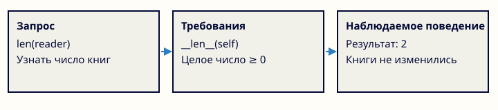
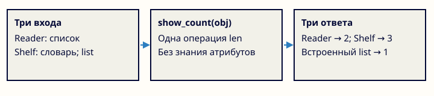
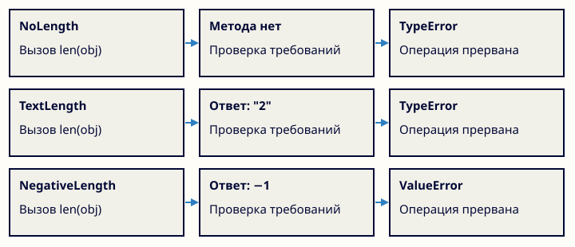
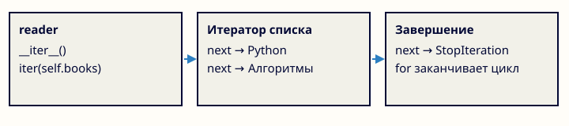
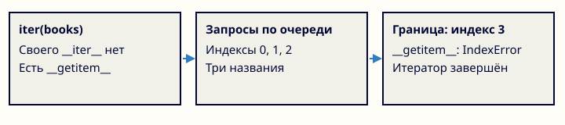
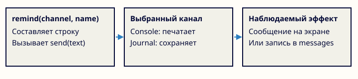

Глава 8.9
Протоколы поведения
От специального имени перейдём к полной договорённости: какие действия объект поддерживает, что принимает и что возвращает. Проверим её на библиотечных примерах и конкретных ошибках.
- Перед началом
- Предыдущие главы модуля 8; функции, списки и исключения
- После главы
- Отличать наличие метода от выполнения контракта и использовать общую операцию для разных классов.
- Среда
- Python 3.11 и новее · самостоятельные примеры
- Основа
- Модуль 8 исходного справочника · с. 568–569
§1 Протокол — требования к поведению
Мы добавили __len__, чтобы len(reader) вернул число книг. В графе «Количество» ожидается допустимое число. Строка или отрицательное значение этой задаче не подходят. У метода с правильным именем тоже может оказаться неправильный ответ.
Протокол поведения — набор требований, позволяющих объекту участвовать в определённой операции. В него входят нужные методы, допустимые аргументы, результаты и смысл действия. Для операции длины нужен __len__, который возвращает неотрицательное целое число. У len есть и верхний предел — sys.maxsize, максимальный размер, поддерживаемый средой выполнения.
class Reader:
def __init__(self, name):
self.name = name
self.books = ["Python", "Алгоритмы"]
def __len__(self):
return len(self.books)
reader = Reader("Аня")
before = reader.books.copy()
count = len(reader)
print(count)
print(type(count).__name__)
print(reader.books == before)2 int True
Метод возвращает целое число 2, соответствующее списку книг. Последняя проверка показывает, что список в этом вызове не изменился. По смыслу нашей модели подсчёт сохраняет записи выдачи. Python проверяет допустимость результата, но не может сам проверить все предметные ожидания.
Покажем, из каких частей складывается договорённость для нашей модели. Реализация метода должна соблюдать все перечисленные требования.

Стрелки связывают запрос, требования и проверку поведения. Неизменность списка — смысловая договорённость нашей модели.
Левый блок формулирует задачу вызывающего кода. Средний описывает точку входа и допустимый тип ответа. Правый проверяет и ответ, и состояние. Если бы метод всегда возвращал 0, тип результата был бы допустимым, но для непустого билета смысл подсчёта оказался бы нарушен.
По-простому: правила заполнения ответа
Сотрудника просят назвать число книг. Ответ должен быть числом, совпадать с записями и не менять их.
Что есть что. вопрос — len; процедура — __len__; требования к числу и смыслу — протокол поведения.
Сетевой протокол задаёт правила обмена сообщениями. typing.Protocol — отдельный инструмент описания требований для проверки типов. Здесь мы рассматриваем договорённости о поведении объектов во время выполнения. Одна такая договорённость может объединять разные классы.
§2 Одна операция работает с разными классами
Количество можно запросить не только у читателя, но и у книжной полки. Данные у этих объектов устроены по-разному: читатель хранит список названий, полка — словарь мест хранения. Функции отчёта не нужно знать это устройство, если оба объекта поддерживают нужную операцию.
class Reader:
def __init__(self):
self.books = ["Python", "Алгоритмы"]
def __len__(self):
return len(self.books)
class Shelf:
def __init__(self):
self.slots = {"A1": "Python", "A2": "SQL", "B1": "Алгоритмы"}
def __len__(self):
return len(self.slots)
def show_count(obj):
print("Позиций:", len(obj))
show_count(Reader())
show_count(Shelf())
show_count(["Python"])Позиций: 2 Позиций: 3 Позиций: 1
В show_count используется только len(obj). Reader считает книги читателя, Shelf — заполненные места словаря, встроенный список — свои элементы. Функция не обращается к books или slots и не проверяет имя класса. Слово «позиции» выбрано достаточно общим для всех трёх случаев.
На схеме разные реализации приводят к одному виду результата. Каждый тип участвует в отдельном вызове общей функции.

Стрелки — путь трёх отдельных вызовов. Порядок имён в последнем блоке сопоставляет входы и результаты.
Средний блок не требует общего пользовательского родителя для Reader и Shelf. Их объединяет доступное поведение. Такой подход часто называют утиной типизацией: вызывающий код использует нужные операции без проверки конкретного имени типа. Это не обещание, что любой объект подойдёт: требования функции всё равно должны выполняться.
По-простому: один вопрос к разным журналам
В журнале выдачи считают книги, в журнале полки — занятые места. Для общего отчёта от каждого требуется только число позиций.
Что есть что. разные журналы — разные классы; общий вопрос — len; show_count использует общую операцию len.
Объекты могут поддерживать одну общую операцию и различаться во всём остальном. Совпадение операции длины ещё не означает, что их можно одинаково индексировать или вызывать.
§3 Отсутствие метода и неправильный ответ — разные ошибки
У графы «Количество» бывает несколько дефектов: её нет, в ней записано слово или отрицательное число. Проверим соответствующие случаи у объектов: метода длины нет, метод возвращает строку, метод возвращает отрицательное число. Это разные нарушения. Они помогают отличить отсутствие возможности от ошибки в её реализации.
class NoLength:
pass
class TextLength:
def __len__(self):
return "2"
class NegativeLength:
def __len__(self):
return -1
for obj in (NoLength(), TextLength(), NegativeLength()):
try:
print(len(obj))
except (TypeError, ValueError) as error:
print(type(obj).__name__, type(error).__name__)NoLength TypeError TextLength TypeError NegativeLength ValueError
NoLength не предоставляет нужного поведения. TextLength предоставляет метод, но строка "2" не является допустимым числом элементов. NegativeLength возвращает целое число, однако его значение отрицательно. Проверка hasattr(obj, "__len__") не различила бы две последние ошибки и не доказала бы корректность подсчёта.
На схеме каждая дорожка — отдельный объект и отдельная попытка. Стрелки связывают дефект с исключением len для этого объекта.

Каждая дорожка — независимый вызов len. Стрелки ведут от типа объекта через причину отказа к исключению.
Последний блок каждой дорожки показывает исключение. TypeError указывает на неподдерживаемую операцию или неподходящий тип результата, ValueError здесь — на недопустимое отрицательное значение. Мы перехватываем ошибки только для демонстрации. Для корректной реализации следует устранить причину ошибки метода. Подстановка длины 0 скрыла бы дефект.
По-простому: название графы и правильный ответ
Графа «Количество» может отсутствовать, содержать слово или отрицательное число. Одного наличия графы недостаточно.
Что есть что. наличие графы — наличие метода; вид значения — int; допустимость — неотрицательное число.
Есть и более сложные протоколы: одна операция может требовать сотрудничества нескольких объектов. Так устроен перебор элементов.
§4 Перебор: итерируемый объект отдаёт итератор
При чтении списка книг можно отмечать пальцем текущую строку. Чтобы пройти по книгам читателя циклом for, нужен способ получать их по очереди. Итерируемый объект предоставляет такой перебор. Итератор хранит положение в конкретном проходе: вызов next получает следующий элемент, а при завершении возникает StopIteration.
Не будем писать собственный счётчик положения: у списка уже есть готовый итератор. Метод Reader.__iter__ вернёт его через iter(self.books). Для обычного итератора iter(iterator) возвращает его самого; создание нового прохода — задача итерируемого объекта.
class Reader:
def __init__(self):
self.books = ["Python", "Алгоритмы"]
def __iter__(self):
return iter(self.books)
reader = Reader()
iterator = iter(reader)
print(iter(iterator) is iterator)
print(next(iterator))
print(next(iterator))
try:
next(iterator)
except StopIteration:
print("Конец прохода")
for title in reader:
print("В цикле:", title)True Python Алгоритмы Конец прохода В цикле: Python В цикле: Алгоритмы
iter(reader) вызывает предусмотренное классом получение итератора. Два вызова next дают названия по порядку. Третий сообщает о завершении исключением StopIteration. Цикл for получает новый итератор и обрабатывает его завершение самостоятельно, поэтому снова выводятся обе книги.
Разделим обязанности читателя и итератора. Положение в проходе хранится у итератора; список выдачи остаётся у читателя.

Стрелки — получение итератора и ход одного прохода. Новый iter(reader) создаёт отдельный проход.
Левый блок получает объект прохода. Средний выдаёт две книги последовательно, правый отмечает исчерпание. Метод __iter__ должен вернуть итератор. Список для этой роли не подходит: у него нет метода __next__. Возврат self.books без iter нарушил бы это требование и привёл бы к TypeError.
По-простому: палец на строке списка
Список книг лежит отдельно, а положение в проходе отмечает палец. Для нового чтения можно начать с первой строки другим указателем.
Что есть что. список — books; указатель — итератор; шаг — next; конец — StopIteration.
Reader в этом примере итерируем, но сам не является итератором: у него нет операции next(reader). В одном объекте могут сочетаться эти роли, однако здесь раздельная модель проще и позволяет начинать новый проход.
§5 Доступ по индексу не обещает всю последовательность
В пронумерованном списке можно запросить определённую строку или часть строк. В исходнике рядом с протоколами рассматривается последовательность: упорядоченные элементы, к которым обращаются по целочисленному индексу. Индексирование обычно задаёт __getitem__, длину — __len__. Но эти имена не гарантируют поддержку любых срезов, отрицательных индексов и изменений. Каждый вид операции имеет свои требования.
Покажем небольшую коллекцию названий. Она передаёт индекс вложенному списку, поэтому получает его правила положительных и отрицательных индексов, срезов и выхода за границу. Эти возможности появляются благодаря передаче запроса списку. Объект среза slice описывает начало, конец и шаг выбранного диапазона.
class ReadingList:
def __init__(self):
self.titles = ["Python", "SQL", "Алгоритмы"]
def __len__(self):
return len(self.titles)
def __getitem__(self, index):
return self.titles[index]
books = ReadingList()
print(len(books))
print(books[0])
print(books[-1])
print(books[1:])
iterator = iter(books)
print(next(iterator))
print(next(iterator))
print(next(iterator))
try:
next(iterator)
except StopIteration:
print("Конец прохода")
try:
print(books[3])
except IndexError:
print("Нет такого индекса")3 Python Алгоритмы ['SQL', 'Алгоритмы'] Python SQL Алгоритмы Конец прохода Нет такого индекса
books[0] передаёт методу целое число 0. Выражение books[1:] передаёт объект среза, который вложенный список обрабатывает. Результат среза здесь — обычный список, не ReadingList. Для отсутствующего индекса 3 список вызывает IndexError, и наш метод передаёт эту ошибку наружу.
В классе нет __iter__, но работает старый последовательностный путь перебора: Python запрашивает индексы от нуля до первого IndexError. Проследим этот путь.

Стрелки — последовательностный запасной путь. Ошибка границы превращается в завершение прохода; длина не управляет этим перебором.
В среднем блоке запросы идут по одному. Правый блок завершает проход по сигналу IndexError. Если метод за границей бесконечно возвращает None, такой перебор не заканчивается: само наличие __len__ его не остановит. У словаря же ключи и их отсутствие подчиняются другому смыслу; любое индексирование не делает объект последовательностью.
По-простому: читать пронумерованные строки
Сотрудник запрашивает строки 0, 1, 2 и останавливается, когда следующей строки нет. Одной надписи «три строки» для этого способа недостаточно.
Что есть что. номер — индекс; выдача по номеру — __getitem__; сигнал границы — IndexError.
Этот пример показывает несколько проверяемых требований к последовательности. Мы не добавляем присваивание по индексу и удаление: их поддержка потребовала бы отдельных операций и правил.
§6 Прикладной протокол уведомления
Протоколы не ограничиваются специальными именами. В программе можно договориться, что объект уведомлений предоставляет метод send(text). Функция напоминания вызывает этот метод. Разные классы могут отправлять сообщение на экран или сохранять в журнале, если соблюдают эту договорённость.
class ConsoleNotice:
def send(self, text):
print("Экран:", text)
class JournalNotice:
def __init__(self):
self.messages = []
def send(self, text):
self.messages.append(text)
def remind(channel, name):
channel.send(f"{name}, верните книгу")
console = ConsoleNotice()
journal = JournalNotice()
remind(console, "Аня")
remind(journal, "Илья")
print(journal.messages)
try:
remind(object(), "Аня")
except AttributeError:
print("Нет операции send")Экран: Аня, верните книгу ['Илья, верните книгу'] Нет операции send
remind составляет строку и вызывает channel.send. Метод ConsoleNotice показывает её, JournalNotice добавляет в отдельный список. Функция не использует результат send, поэтому не требует конкретного возвращаемого значения. Для неё важны принятие строки и действие с сообщением. Обычный object() не имеет такого метода: явный доступ вызывает AttributeError.
На схеме одна точка вызова направляет сообщение выбранному объекту. Для каждого вызова используется один выбранный канал.

Строки среднего и правого блоков сопоставлены по порядку. Для каждого вызова выбирается один канал.
Средний блок скрывает различие реализации от функции напоминания. Правый показывает ожидаемый эффект, по которому проверяют реализацию. Если назвать метод send, но молча потерять сообщение, доступ к имени сработает, а смысл договорённости будет нарушен. Так же и __len__ с постоянным неправильным числом проходит лишь формальную часть требований.
По-простому: передать напоминание выбранному сотруднику
Один сотрудник объявляет сообщение, другой записывает в журнал. Отправитель использует одну просьбу, но заранее знает, какого результата ожидает от выбранного способа.
Что есть что. просьба — вызов send; сотрудники — классы каналов; договорённость об эффекте — прикладной протокол.
Для проверки протокола полезен небольшой прогон: обычный случай, граница, допустимый результат и ожидаемое состояние после операции. Наследование или аннотация типов могут помогать описывать требования, но не заменяют проверку смысла. В этой партии достаточно обычных классов; обязательный общий интерфейс мы не вводим.
§7 Частые ошибки
| Ошибка | Что происходит | Как исправить |
|---|---|---|
| Приравнивать протокол имени метода | Метод может вернуть недопустимый результат | Проверять аргументы, результат и смысл |
| Считать hasattr доказательством поддержки | Наличие атрибута не проверяет корректность поведения | Прогнать нужную операцию на обычных и граничных данных |
| Вернуть список из __iter__ | Список итерируем, но сам не итератор | Вернуть iter(self.books) |
| Ждать остановки перебора через None | None является обычным элементом | Для индексного пути соблюдать IndexError на границе |
| Считать len гарантией индексирования | Длина и доступ по индексу — разные возможности | Требовать нужные операции |
| Путать протокол поведения с typing.Protocol | Это разные уровни описания требований | Сначала определить поведение во время выполнения |
§8 Шпаргалка и термины
- Протокол поведения
- Требования к поддерживаемой операции, результату и смыслу действия. Пример и схема §1.
- Специальный метод
- Предусмотренная точка входа операции: __len__ реализует получение длины. Пример и схема §1.
- Контракт
- Договорённость между вызывающим кодом и реализацией объекта. Пример и схема §1.
- Утиная типизация
- Использование нужного поведения без требования конкретного имени типа. Пример и схема §2.
- Исключение
- Сигнал ошибки или особой ситуации: TypeError для неверного результата, ValueError для отрицательной длины. Пример и схема §3.
- Итерируемый объект
- Объект, из которого iter получает итератор для прохода. Пример и схема §4.
- Итератор
- Объект очередного прохода; next выдаёт элементы, iter возвращает его самого. Пример и схема §4.
- StopIteration
- Сигнал завершения итератора после последнего элемента. Пример и схема §4.
- Последовательность, индекс и срез
- Упорядоченные элементы; целое число выбирает позицию, slice описывает часть диапазона. Пример и схема §5.
- IndexError
- Сигнал отсутствия целочисленной позиции; завершает запасной последовательностный перебор. Пример и схема §5.
- Состояние и побочный эффект
- Данные объекта и наблюдаемое изменение: send добавляет сообщение в messages. Пример и схема §6.
Итог главы
- Протокол описывает не только методы, но и допустимые результаты и ожидаемый смысл операции.
- Разные классы могут поддерживать одну операцию без общего пользовательского базового класса.
- Длина, истинность, индексирование и перебор имеют отдельные требования.
- __iter__ возвращает итератор; next получает элементы до StopIteration.
- Запасной перебор через __getitem__ завершается по IndexError на границе. Одного __len__ для этого недостаточно.
- Прикладная договорённость может использовать обычный метод, например send(text).